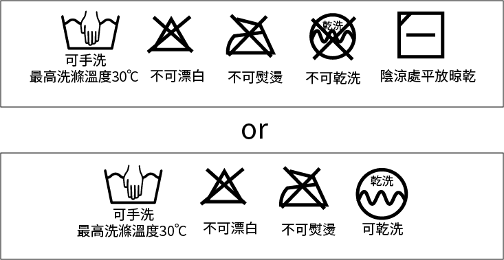
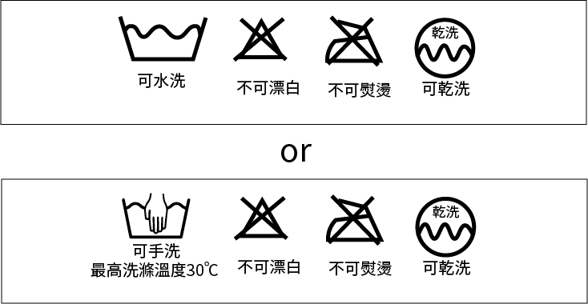

關於帽子尺寸
大小會因製造商的不同而多少會有一些出入，我們的商品中是以cm為基準進行測量及判斷。
頭圍=用捲尺等測量工具測得的數值以及實際佩戴時的感覺。
長度x寬度x高度=帽子平放時，兩端之間的長度。
（在內部裝墊子且頂部充氣的情況下進行測量。）
帽簷=帽子從內翻出時，前額相接觸到的部分至帽簷尖端的長度。
（測量最長的部分。）
大小會因製造商的不同而多少會有一些出入，我們的商品中是以cm為基準進行測量及判斷。
頭圍=用捲尺等測量工具測得的數值以及實際佩戴時的感覺。
長度x寬度x高度=帽子平放時，兩端之間的長度。
（在內部裝墊子且頂部充氣的情況下進行測量。）
帽簷=帽子從內翻出時，前額相接觸到的部分至帽簷尖端的長度。
（測量最長的部分。）
基本上，我們的商品中大多都是F Size(Free Size)，
若有標記尺碼的商品，請依下列順序進行丈量。
無法洗滌的洗標
有可能手洗的洗標

針對很明顯的汙垢，請使用袖子專用的洗劑。
若是汗漬的情況，看是使用液氧漂白劑或是使用污漬用的洗劑都可以。
再將帽子浸入溫水或是約30°C的清水中，然後用手輕輕沖洗。
(注意不要放入洗衣機，以免帽子變形)
洗滌後用清水沖洗，並用毛巾等將其瀝乾，然後放在陰涼通風處等帽子自然風乾。
此時，記得要把帽子的皺褶撫平，可以在帽子內放入毛巾或烹飪用的篩網等去定型。
若沒有確實整理外型就風乾的話，很可能會造成帽子縮水。
(※請不要用洗衣機脫水或是日曬的方式，很可能會造成帽子變形。)
有可能乾洗的洗標
建議您去附近的洗衣店或清潔帽子的專門店獲取更進一步的資訊。
※以上內容僅供參考，還是請務必先查看洗標上的清洗注意事項。
若長時間沒有配戴的帽子，請收納於陰涼處，且務必要先把濕氣去除掉再進行收納保存。
若沒有先去除溼氣的話，可能會造成帽子產生異臭或是發霉的狀況。
若帽子是羊毛的材質的話，請與防蟲劑一起放入收納袋內進行保存。
直接水平戴到底部，
展現出簡單俐落感。
正戴的話比較偏男性，
稍微斜戴比較偏女性。
可以直接正戴，保留上方空間。
也可以將帽子後方向下拉塑形。
稍微斜戴，讓兩側產生空間感。
創造出不一樣的氛圍。
帽子戴到眉毛，並保留上面空間。
將後方多餘的空間向下拉，
或也可將帽子進行反摺。
深淺度會影響到氛圍!
高低也會響整體感覺。
也可以試看看反戴。